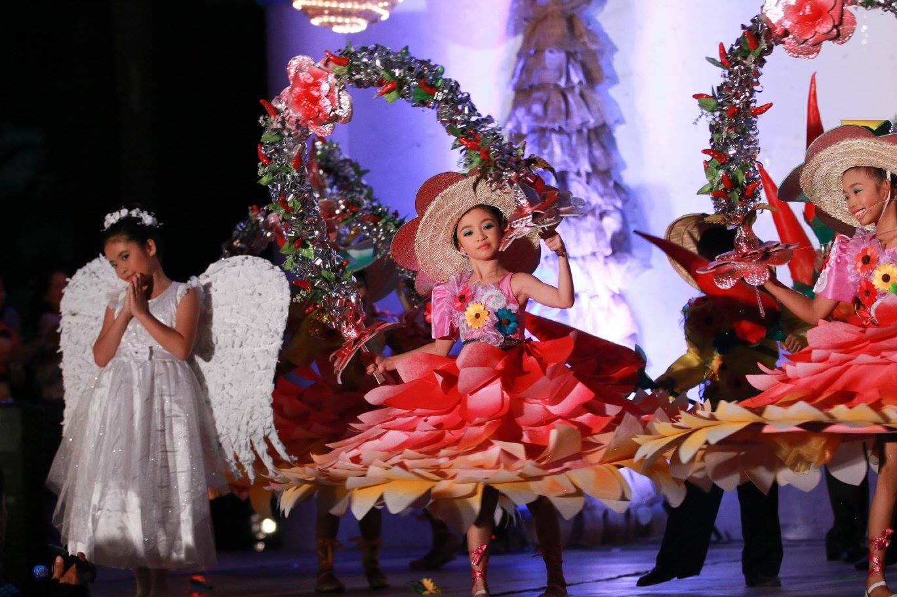

2009 District Music and Dance Competition
Binitayan Warriors of Binitayan Elementary School was awarded as Champions in the Pep Squad Competition held at Daraga North Central School
1st ever LCC Kiddie Dance Showdown
Binitayan Elem. School Warriors were hailed as Champions held at the LCC Event Center 1, Legazpi City, Albay.
LITMUSDA Children's Choir & Pep Squad
Latin Dancers of Binitayan Dance Troupe (Binitayan Warriors) Cluster B joined and became Champions again. It was held in Camalig North Central School Gymnasium. Other districts like Camalig South District, Camalig North District, Daraga South District, Manito District, Guinobatan West District, Guinobatan East District and Jovellar District also participated in the said event.
Daraga Festival 2010: Daraga Dance Showtime
They also became part of the Daraga Festival 2010: Daraga Dance Showtime and was hailed as the Grand Champion at Daraga Covered Court.
Pilipinas Got Talent Season 2

One of the greatest achievement made by Binitayan Dance Troupe that took a leap of faith was to audition and qualify for the semi-finals of one of the most prestigious talent searches of ABS-CBN, Pilipinas Got Talent Season 2.
1st Regional Juicy Interschool Dance Competition
Binitayan Dance Troupe also became 1st Regional Juicy Interschool Dance Competition Ultimate Champion(Grade School Category) held at the Embarcadero de Legazpi, Legazpi City.
Hataw at Galaw 2011

The group also became a grand finalist of 97.1 OK FM's Biggest Dance Competition in Bicol Region, Hataw at Galaw 2011.
2011 Music and Dance Competition
For the 2nd time around, they were agai awarded as Champions in the Pep Squad Competition representing Cluster B. The competition was held at Albay Provincial Sports Complex, Travesia, Guinobatan, Albay.
1st Cagsawa Festival

Earlier February Alongside Cagsawa Ruins, the dance troupe were invited to perform.They pep squad was also invited to perform their cheerdance in Daraga Covered Court.
>Congressional Meet: Pep Squad Competition
They have also won 1st Place in the Congressional Meet for the 2nd time around in the Pep Squad Competition held at the Daraga North Central School, Daraga
Inter-School Dance Competition
BINITAYAN ELEMENTARY SCHOOL, BES Warriors actively participated in the Inter-School Dance Competition held at Embarcadero de Legazpi Celebration Plaza. They battled between Bicol College and Albay Central School and won the grand prize/Champion.
Karangahan Green Christmas Bulilit Pastores

On December 12, 2012, the dance troupe snatched the Champion seat in the very 1st Karangahan Green Christmas Bulilit Pastores at Peñaranda Park, Legazpi City.
Magayon Festival: Daraga Night
On April 24, 2013, the Binitayan Dance Troupe was invited to perform in Magayon Festival: Daraga Night, held at Peñaranda Park, Legazpi City.
Champion in Congressional Meet

By the month of April, the pep squad shined again and became the Champion as they won back-to-back in the Congressional meet held in Camalig North Central School and in Albay Provincial Sports Complex, Travesia, Guinobatan, Albay.
2nd Regional Juicy Interschool Dance Competition
The Binitayan Dance Troupe for the second time around became the Champion in the 2nd Regional Juicy Interschool Dance Competition Ultimate Champion (Grade School Category) held at the Embarcadero de Legazpi on August 17, 2013.
Daraga Cultural Night

On September, 2014, the dancers were invited to perform in the Daraga Cultural Night at Daraga covered court. The event was attended by various dignitaries and officials.
Division MANCOM Performance
Performers presented their Pastores during the Division MANCOM at The Concourse Convention Center on December 25, 2014.
Performance on Teachers' Day
On October 3, 2014, the dance troupe was invited by the Supreme Pupil Government of their Alma Mater to perform on Teachers' Day.
3rd Regional Festival of Songs, Music and Dances ALAY SA SINING General Rehearsal
The dancers participated in the general rehearsal for the 3rd Regional Festival of Songs, Music and Dances ALAY SA SINING at Chansma Function Hall, Lignon Hill, DepEd Albay Division Office on February 6, 2015, in preparation for the event on February 9, 2015.
3rd Regional Festival of Songs, Music and Dances ALAY SA SINING
The Binitayan Dance Troupe, along with other schools in the province of Albay, presented a "Cinderella" dance drama in the 3rd Regional Festival of Songs, Music and Dances ALAY SA SINING held at the Iriga City Coliseum, Iriga City, on February 8-9, 2015.
Cagsawa Festival: Daraga North and South District Night
The group participated in the Cagsawa Festival at the Daraga Covered Court on February 18, 2015, attended by various officials and schools from Daraga.
Cluster B Level Elimination C Champ Moves Dance Exercise
The school participated in the Cluster B Level Elimination C Champ Moves Dance Exercise on September 14, 2015, securing the 2nd place. They competed against several districts, including Manito, Daraga North and South, Camalig North and South, Guinobatan East and West, and Jovellar.
Karangahan Green Christmas Bulilit Pastores
For the 3rd time, the Binitayan Dance Troupe participated in the Karangahan Green Christmas Bulilit Pastores and secured the 1st place again at Peñaranda Park, Legazpi City, on December 19, 2015.
Christmas Cheers 2015: The Official Countdown of the 30th Anniversary Celebration of Daraga Parish Youth Group
The Binitayan Dance Troupe presented the Pastores during the Christmas Cheers 2015 event, which was the official countdown of the 30th anniversary celebration of Daraga Parish Youth Group, held on December 24, 2015, at Parroquia Nuestra Señora De La Porteria Sta. Maria Hill, San Roque, Daraga, Albay.
Juicy Cologne Inter-School Dance Competition Champion
Amidst the pulsating energy of the Juicy Cologne Inter-School Dance Competition, the Binitayan Warriors claimed the championship for the second consecutive time. Hosted at the lively venue of Embarcadero de Legazpi, their performance ignited the stage with unparalleled talent, precision, and fervor. With dynamic choreography and flawless execution, the Binitayan Warriors captivated both judges and spectators, showcasing their unwavering dedication and undeniable prowess in the art of dance. Their victory cements their legacy as dance champions and serves as a testament to their exceptional skill and relentless determination.
Graduation Exercises at Binitayan Elementary School
The Binitayan Dance Troupe performed the Doxology and Intermission Number during the Graduation Exercises at Binitayan Elementary School on March 30, 2016.
Region IV-A Welcome Party
The dance troupe was invited to perform at the welcome party of Region IV-A, held at Daraga North Central School, Daraga, Albay. They also performed at the Region V Welcome Party at the Bicol University Commencement Grounds.
LCC Kiddie Dance Showdown

The Binitayan Dance Troupe participated in the LCC Kiddie Dance Showdown and secured the title of Champions for the 2nd time, held at the LCC Event Center 1 on April 23, 2016.
Folk Dance Competition at Daraga Town Fiesta
The Binitayan Wamors won the 2nd place in the Folk Dance Competition at Daraga Town Fiesta, held at [Location]. The event was attended by various dignitaries including Daraga North Central School, Felma A. Bonito, PH. D. Daraga North District Supervisor, Hon. Gery R. Jaucian, Mayor of Daraga, Hon. Carwyn G. Baldo, Vice Mayor of Daraga, and Councilor Archie Bajamundi, Chairman, Committee on Tourism & Cultural Affairs.
Sports: Transforming Life for the Future
The Binitayan Dance Troupe performed in Palarong Panlalawigan 2016 at Albay Provincial Sports Complex, Travesia, Guinobatan, Albay.
Annual Pastores Performance
The Binitayan Dance Troupe performed the annual Pastores during the Albay Christmas Cheers 2016 at Peñaranda Park, hosted by the Provincial Government of Albay under the leadership of Gov. Al Francis Bichara.
Pastores Performance at Regional MANCOM
The Binitayan Dance Troupe was invited to perform the Pastores during the Regional MANCOM at The Concourse Convention Center in December 2016.
Performance at Palarong Pambansa 2016

The Binitayan Dance Troupe led the whole delegation, athletes, coaches, and chaperons of Region V at the Palarong Pambansa 2016, held at the BU Albay Sports Complex on February 6, 2017.
Children's Month Celebration
The Binitayan Dance Troupe participated in the activity entitled "Fictional King and Queen 2017" as part of the Children's Month Celebration. The event took place at Daraga Covered Court, Daraga Albay, and involved teachers, young teachers, pupils, parents, GPTA, and alumni.
Albay Bulilit Pastores 2017
In 2017, the Albay Pastores took center stage at the Albay Astrodome, mesmerizing audiences with their enchanting performance of "Pastores a Belen" - a captivating fusion of song and dance. Their breathtaking rendition not only secured them the championship title but also etched their name in the annals of the competition's history. With each graceful step and harmonious note, they painted a vivid tableau of tradition and passion, leaving an indelible mark on all who witnessed their triumphant showcase.
Divisional Pep Squad Competition 2018
Binitayan Dance Troupe triumphed in the Divisional Pep Squad Competition with their electrifying performance that captivated both judges and spectators alike. With synchronized movements, vibrant costumes, and pulsating beats, they commanded the stage, leaving an indelible mark of excellence. Their precision, energy, and unwavering spirit propelled them to victory, earning them the prestigious title and admiration from their peers. Binitayan Dance Troupe's win showcased not only their talent but also their dedication to their craft, solidifying their place as champions in the realm of competitive dance.
Albay Bulilit Pastores 2018
On January 12, 2019, the skilled ensemble from Binitayan Dance Troupe distinguished themselves at the Albay Bulilit Pastores Season 2 competition, securing an impressive 2nd Runner-Up title alongside the esteemed award for Best Costume.
Bulilit Pastores Season 3
Celebrating their triumphant return to the limelight, the Bulilit Pastores dance troupe clinched victory for the third consecutive time, etching their name in the annals of history as four-time champions of the revered competition. The echoes of their resounding success reverberated through the hallowed halls of the event venue on January 12, 2019. With synchronized steps and boundless energy, they captivated audiences and judges alike, solidifying their status as the epitome of grace and talent in the world of dance. As the spotlight illuminated their radiant smiles and glistening trophies, it became evident that the legacy of Bulilit Pastores was destined for greatness, inspiring future generations to strive for excellence on the dance floor.
Art and Comic Strip Against Child Labor by DOLE Albay
3rd Place Arts and Crafts Category Ruiz Joaquin Mapula - Binitayan ES Coach: Maricel Castro
14th Mitsubishi Asian Enikki Festa
Ashanti Yuan Montecastro, a Grade 6 student of Binitayan Elementary School, received the Mitsubishi Public Affairs Committee Award. She also ranked 5th Place in the National Category. Out of 4500 entries in the Philippines, she was one of the selected entries to represent the country, with guidance from Maricel M. Castro as coach.